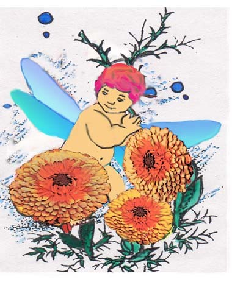

一月花語--金盞花（Calendula、Marigold，Moon Daisy）財富、長春、別離
江銘輝 五夢網
圖：金盞花在中國代表財富、長春，點綴了新春歡樂氣氛。
|

圖：金盞花在中國代表財富、長春，點綴了新春歡樂氣氛。
金盞花在中國代表財富、長春
金盞花又名常春花在中國代表財富、長春，它的花朵顏色鮮豔亮麗，從淡檸檬黃、正黃、金黃、橙黃到深橙都有，花朵開放時，看起來充滿了陽光般璀璨，因此稱為太陽的使者，非常適合種於陽台、花壇，在東方它是點綴新春歡樂氣氛。
金盞花在西方代表失望、離別
金盞花一般在霜雪的季節開花，屬耐寒性植物，忍耐力相當強。此外它還有一個特性，在歐美它早上九時開放，下午三時閉合，歐美人士又叫做「家庭主婦的時鐘」，非常守時。歐美人士由於金盞花是通知聖母瑪利亞懷孕的花朵，因此它的花語是－救濟。但大部分的西方人認為金盞花代表著失望、離別。
金盞花是治療的藥方
其實金盞花有美容和健康的應用價值，例如金盞花的葉汁有護膚除斑的功效，既可消除雀斑,又能清爽皮膚和美白等並且有殺菌、抗黴、收斂的功效,及減肥的功效，是合女性飲用。所以金盞花是名副其實的女性之花，古埃及人稱為“回春草”，也是花中的收斂明星，能促進皮膚新陳代謝，對收縮粗大毛孔有著明顯的效果。歐洲中古時期黑死病及瘟疫發生之時，金盞花即是用來治療的藥方。
瓊瑤愛情小說金盞花
金盞花對於台灣地區的五年級生或是六年級生來說並不陌生，因為當時的小說作家－瓊瑤，寫了本書名為「金盞花」的愛情小說，並把它拍成電影，當時真是紅遍半邊天(演員有林青霞、秦漢) 更有鳳飛飛主唱。故事的內容描述離別、情苦，象徵著金盞花的花語「離別、悲歡」，歌曲如下：
金盞花兒開了， 鳳凰木兒綠了， 金盞花兒開了， 薔薇花兒紅了，
金盞花開了, 你我遇見了, 你我遇見了, 呀天地都醉了,
金盞花兒開了， 鳳凰木兒綠了， 金盞花兒開了， 薔薇花兒紅了。
金盞花外形似酒杯有悲歡離合意味
西方之所以將金盞花表示為離別，我想它的花朵外型像極了酒杯，酒杯是用來盛酒，人在悲歡離合時，經常以酒消愁。而中國人將它稱為為長春花或長命菊，李時珍說得很清楚，他說：「長春，言耐久也」。